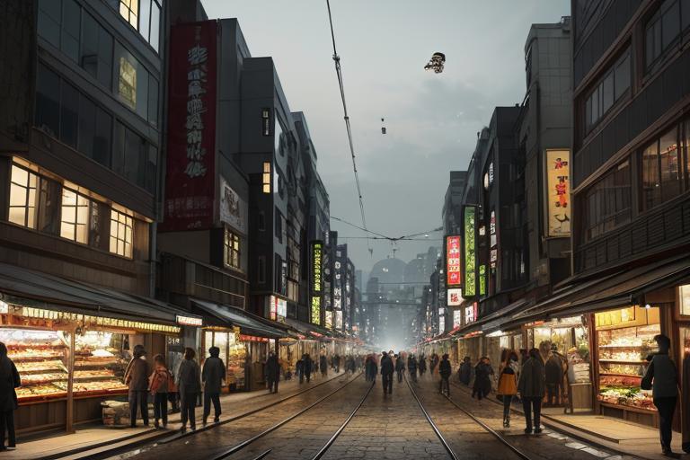
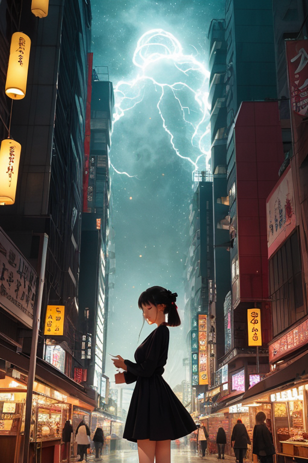
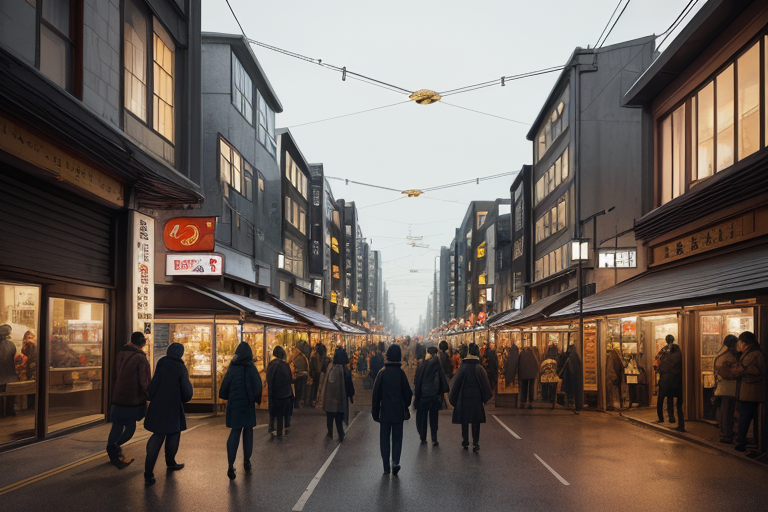
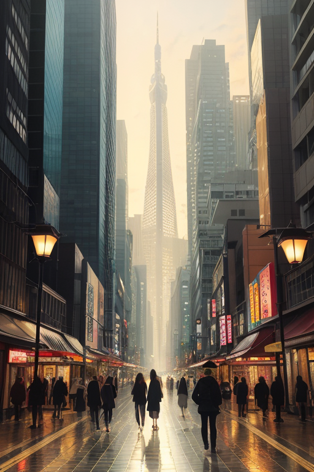
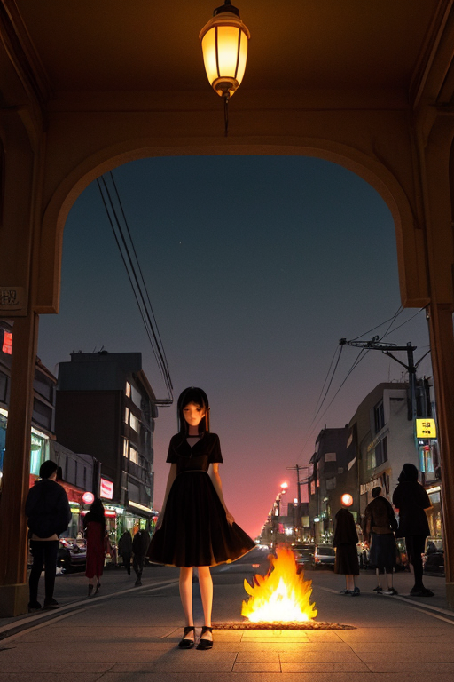

第一章 現実の広島
あなたはまだ気づいていない。この土地にも、王がいることを。
路面電車が街を縫う。平和通り筋のアーケードには、昼時を過ぎても人の流れが途切れない。鉄板の上でキャベツがジュッと音を立て、甘辛いソースの香りが漂う。活気に満ちたこの商いの街は、金と欲望、そして切実な日常がせめぎ合う場所だ。人々は今日の売り上げ、明日の仕入れのことを考え、足早に通り過ぎる。その足元を、金色に光る小さな炎が、蟻のように、しかし確実に流れている。誰も気に留めない。それは、この街の王、ヒロシマリア・フェニクスが張り巡らせた「記憶の脈」だ。
王は、原爆ドームの影に佇んでいた。赤と金の紋章が、灰色の鉄骨に映える。彼女の目は、賑わう現在の街と、地中に刻まれた過去の痕跡を同時に見つめている。商都の活気は歪みを生む。急ぎすぎる時間、積み重なる欲望、そして薄れゆく記憶。それらが地殻に微細なひびを走らせる。
「歪みは、人の心の速度からも生まれるのです」
傍らに立つ主席妖精、フェニアが静かに呟いた。彼女の銀髪は、通りすがる人々の、かすかな焦りや悲しみを、そっと吸い取っていた。

第二章 歪みの兆候
路面電車が、平和通りをゆっくりと走る。ガラス窓に、買い物袋を抱えた人々の姿や、スマートフォンの光が流れる。活気は確かだ。しかし、ヒロシマリアは、その活気の底を流れる「速度」の異変を感じ取っていた。投資話に沸くオフィス街の地下では、金の流れが地脈を焦がすように熱く、しまなみ海道を渡る観光客の「もっと早く、もっと多く」という欲望が、海の静かなリズムを乱していた。
「商いの熱は、地を脆くします」
フェニアが、お好み焼きの屋台から立ち上る湯気のような、人々の刹那的な熱狂を掌で受け止めた。その熱は、時に過去を忘れさせ、未来への不安だけを増幅させる。
原爆ドームの傍らで、ヒロシマリアは目を閉じた。彼女の内側で、赤と金の鳳凰の紋章が微かに輝く。今、この街の地下で、経済活動の活発さと人々の心の焦燥が共鳴し、微細な歪みが蓄積しつつあった。それはまだ、誰にも感知されないレベルだ。しかし、放置すれば、やがては確かな亀裂となる。
彼女は、記憶の重みを地盤に沈めるように、静かに力を込めた。急ぎすぎる時間の流れを、ほんの一瞬、過去の静寂で満たす調整だ。未来を救うのは、過去の記憶そのものではなく、その重みを今、どう抱えるかという「間」だと、彼女は知っていた。

第三章 王の葛藤
路面電車が、平和記念公園前の停留所に滑り込む。観光客の笑い声、ビジネスマンの焦燥、学生たちの未来への不安。それらすべてが、この街の「今」を形作る欲望の波だ。ヒロシマリアは、その波の底に立っていた。彼女の役割は、この活気そのものを否定することではない。歪みを生む過剰な「熱」を、記憶の「静寂」でそっと冷ますことだ。
しかし、時に葛藤が訪れる。経済特区の開発計画が、地下の古い断層の上に、巨大なビルの基礎を打ち込もうとしている。活気は増す。歪みのリスクも、確実に増す。彼女は、開発を止める力も、その欲望を消す力も持たない。できるのは、地盤に蓄えられた過去の記憶──戦火にも、復興にも耐えたこの土地の「重み」を呼び覚まし、鋼鉄とコンクリートが加える圧力に、ほんの少しの「粘り」を与えることだけだ。
「未来を救うために、過去を引きずるのか」。彼女の内側で、無感情だったはずの王の本質が、この土地で育まれた「鎮魂」の感情と反発する。フェニアがそっと彼女の肩に触れる。悲哀を吸い取るその手からは、答えではなく、共に重みを分かち合う温もりだけが伝わってきた。

第四章 妖精との対話
路面電車が街を流れる。その車窓から、平和記念公園の緑と、遠くにそびえるビル群が交互に過ぎていく。フェニアは静かに語り始めた。
「商いとは、『不足』を『充足』に変える流れです。この湾は、物資を、金を、そして人を運んできた。その流れそのものが、この土地の命です」
ミヤジマナが厳島の潮風のような声で続ける。「でも、流れは時に歪みを生む。速さを求めすぎて、支えきれない重さを積みすぎる。私たちが調整するのは、その『過剰』の一瞬です。記憶の重みで、流れをほんの少しだけ粘らせ、崩壊の寸前で、かすかな『間』を作る」
ヒロシマリアは、窓の外を行き交う人々の顔を見つめた。足早のサラリーマン、買い物袋を提げた主婦、笑い合う学生。それぞれの日常が、無数の小さな商いと欲望の上に成り立っている。
「記憶は未来を救えない」フェニアが呟く。「救えるのは、今を生きる人だけ。私たちが背負う記憶は、ただの『重し』。でも、この重しが、流れに溺れそうな今を、ほんの一瞬、足を踏みとどまらせる。それだけです」
王はうなずいた。未来を救うのは過去ではない。過去を背負いながら、今という瞬間を、どれだけ真摯に生きるか。その積み重ねだけが、未来という名の、まだ見えない岸辺へと続く、か細い橋なのだと。

第五章 微調整と余韻
路面電車が平和通りをゆっくりと走る。車内は観光客と買い物帰りの人々で混雑していた。王は車両の連結部近くに立ち、目を閉じる。彼女の内側で、フェニアとミヤジマナが静かに共鳴する。町の「流れ」が視える。人の波、金の波、そしてその底をゆっくりと這う、古傷の疼きのような歪み。
原爆ドーム前の交差点。信号待ちの家族連れの子供が、ふと母親の手を離し、ボールを追って車道へ一歩踏み出そうとした。その一瞬、路面電車が僅かに速度を落とし、クラクションが遠くで鳴る。子供は母親に引き戻され、何事もなかったように笑う。誰も気づかない。ほんの0.5秒の遅延、ほんの少しの音量の調整。それは記憶が未来を救うのではなく、記憶を背負う者が今という瞬間に介入する、微かな痕跡だった。
王は目を開け、電車を降りた。夕陽が平和の灯を赤く染め、永遠に燃え続ける炎は、過去への鎮魂であり、未来へのただの灯りでもある。彼女は振り返らず、人の波に溶けていく。調整は終わった。残るのは、救われたわけではない、しかし確かに生きた今日という一日の、かすかな余韻だけだ。
あなたの町にも、王がいる。